近一周，英国逐渐陷入全面暴乱。多地发生大规模抗议活动，反对英国政府的移民政策。持不同意见的抗议者之间爆发冲突，甚至与警方发生对峙，引发骚乱。
有蒙面示威者投掷砖头及燃烧弹、亦有建筑物和汽车被纵火烧毁，抢劫商店的、袭警的…
13年来最严重的极右翼暴力事件大规模在英国全境蔓延，对外来移民的仇恨不断发酵，全英各大城市先后被卷入泥沼。
图源：网络
因为形势紧急，马来西亚、印尼、阿联酋、瑞典等多个国家已向在英国的本国公民发出严厉警告，称“面临恐怖主义威胁风险，在英国应高度谨慎，避开发生抗议活动的地区，时刻保持警惕。”
随着暴乱范围不断延伸，民众保持自身人身安全也变得越来越紧要…
暴乱导火线
2024年7月29日，英格兰南港的一个儿童舞蹈班发生持刀伤人案。一名17岁男子手持刀具走进教室内对所有人狂砍，最终导致3名儿童死亡，8名儿童，2名成人受伤的惨剧。
这是几十年来英国发生的最严重的儿童袭击事件之一。
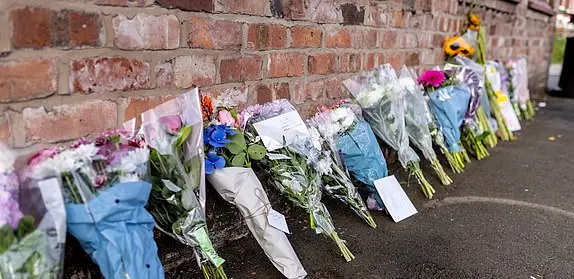
事发后，网上流传虚假信息，称犯罪嫌疑人是激进的穆斯林移民。英国极右翼分子通过社交媒体挑动反移民和仇视伊斯兰教的情绪，导致整个英国的反移民情绪高涨，从7月30日开始，英国不少地方都爆发连场反移民示威，之后演变成暴力冲突。
而实际上，据警方最初公布的信息称，嫌疑人是一名17岁的男性，出生在卡迪夫。后来有报道称，嫌疑人出生于卢旺达家庭，2013年搬到了南港，警方称，他与伊斯兰教没有任何联系。
但错误信息的传播被认为是由南港捅人事件而引起的一系列暴乱的原因。
多地区暴动骚乱升级
据英国官方消息，在过去一周，示威暴徒参与针对外来庇护者停留区域及清真寺的打砸抢烧，数百名名警察在冲突中受伤。截至当前，警方已经就此次暴乱逮捕了超过400人。
7月31号晚，数千名抗议者在伦敦市中心，首相官邸附近与警察发生暴力冲突。
8月4日，大约700名极右派示威者聚集在罗瑟勒姆假日酒店外纵火焚烧酒店。
……
尽管英国警方已经随时待命，周末抗议活动引发的混乱局面还是彻底失控。全国各地出现了更多的混乱，抗议活动和暴力事件进一步爆发。
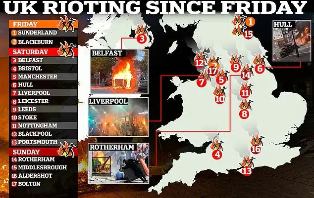
从南港清真寺到伦敦首相办公室，在全英20多个城市，抗议者投掷杂物、砸碎窗户并纵火，破坏公共建筑、焚烧酒店、与警察发生冲突、砸毁警察车辆…
遭围攻后的清真寺
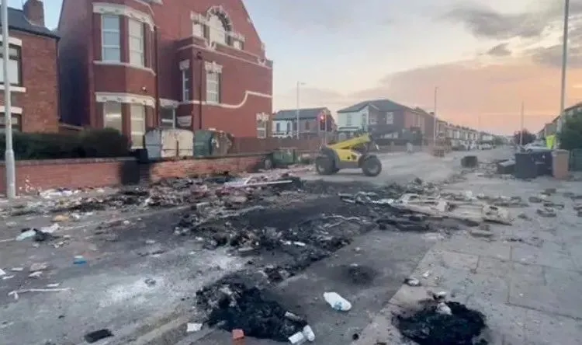
暴徒袭击警察
骚乱后的街道
被焚烧了的警车…
骚动人群打砸店铺
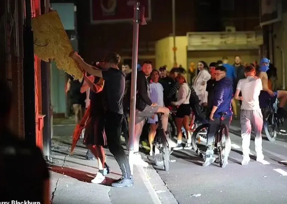
亚裔男子路过遭袭
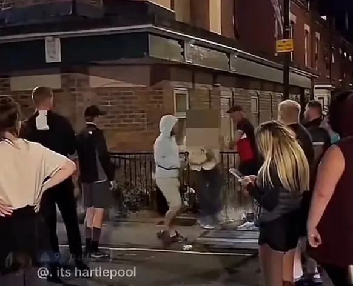
闹事的蒙面暴徒袭击警察
有人拍到暴徒拦下汽车，盘问司机是否是“白人和英国人”，对方回答是才放行。
墙壁上也出现“滚出英格兰”和“他X的狗”等种族主义涂鸦，集结游行的暴徒们高呼“我们要回我们的国家”。
极右翼份子到处煽动民众情绪，暴乱在英国爆发开来。
👇英格兰南港
骚乱人群点燃车辆发起抗议，烈火之中警察紧急出动。
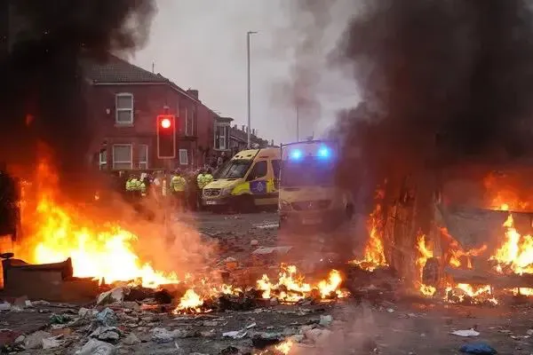
👇德文郡
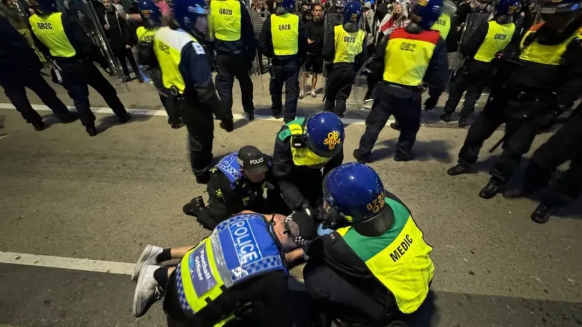
👇塔姆沃斯
在北部的塔姆沃思和罗瑟勒姆，抗议者破坏、焚烧了两家假日酒店。据悉这两家酒店收容了正在等待庇护申请裁决的寻求庇护者们。
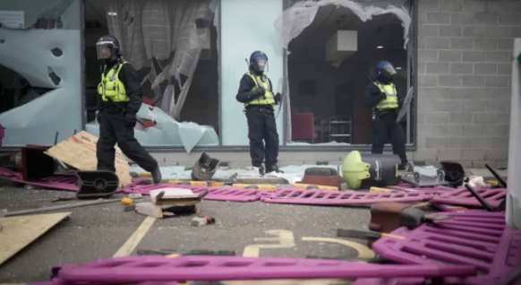
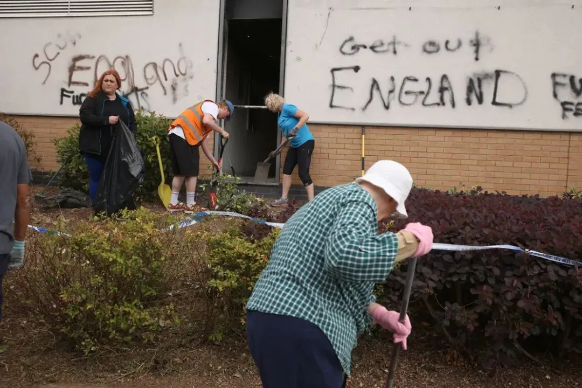
👇曼彻斯特
在曼彻斯特街头，人群和警察发生直接冲突。约有150人参加，场面一度失控。
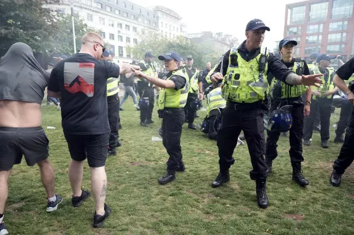
图源：网络一家Sainsbury’s商店遭到抢劫
👇利物浦
利物浦一间图书馆和食物供给站遭纵火，食物供应站和烟酒店铺遭暴徒洗劫。
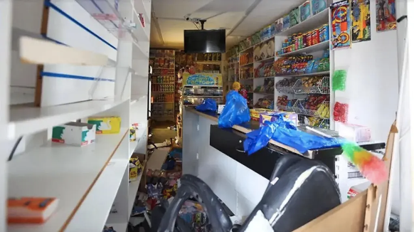
👇赫尔
市中心则多地起火、数间店铺被砸。
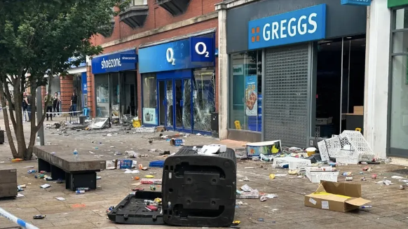
👇贝尔法斯特
贝尔法斯特市政厅外发生抗议活动后，汽车被焚烧。
👇桑德兰
桑德兰发生暴乱，警方紧急采取措施，关闭警门，并进一步逮捕了嫌疑人。桑德兰警察局旁边的一间办公室发生火灾。
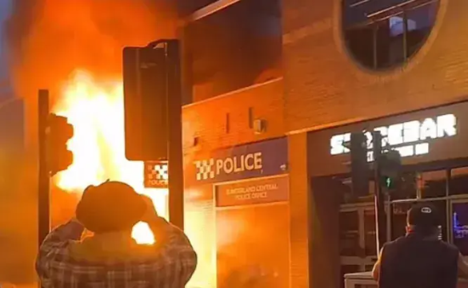
最新消息显示，暴徒把暴乱目标转向移民公司。英国时间8月7日，暴徒将在全英30个区域的39个点搞暴乱。
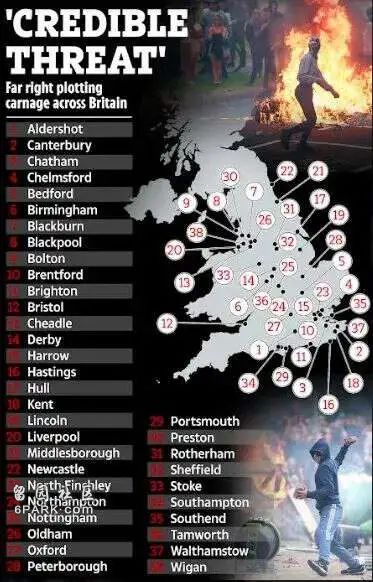
目前警方已经列出的即将发生暴乱的地区包括伦敦、伯明翰、奥尔德肖（Aldershot）、米德尔斯堡（Middlesbrough）、塔姆沃思（ Tamworth）和罗瑟勒姆（Rotherham）等地是暴乱的热点地区。
诺丁汉警方还侦查到，暴徒们准备聚集施暴的地点，竟然是“一位身体虚弱的老人的家”的地址。警方称：“这个地点与移民业务没有半毛钱的关系。”
警方表示，已经组织6000名专业警察随时待命，以应对暴乱。
以下是极右翼阵营准备聚集施暴的完整列表，请在英国的家人朋友格外注意，谨慎外出，或者不要外出。
Aldershot（奥尔德肖特）
Canterbury（坎特伯雷）
Chatham（查塔姆）
Chelmsford（切姆斯福德）
Bedford（贝德福德）
Birmingham（伯明翰）
Blackburn（布莱克本）
Blackpool（黑池）
Bolton（博尔顿）
Brentford（布伦特福德）
Brighton（布莱顿）
Bristol（布里斯托）
Cheadle（钱德尔）
Derby（德比）
Harrow（哈罗）
Hastings（黑斯廷斯）
Hull（赫尔）
Kent（肯特）
Lincoln（林肯）
Liverpool（利物浦）
Middlesborough（米德尔斯堡）
Newcastle（纽卡斯尔）
North Finchley（北芬奇利）
Northampton（北安普顿）
Nottingham（诺丁汉）
Oldham（奥尔德姆）
Oxford（牛津）
Peterborough（彼得伯勒）
Portsmouth（朴茨茅斯）
Preston（普雷斯顿）
Rotherham（罗瑟勒姆）
Sheffield（谢菲尔德）
Stoke（斯托克）
Southampton（南安普顿）
Southend（绍森德）
Sunderland（桑德兰）
Tamworth（塔姆沃斯）
Walthamstow（沃尔瑟姆斯托）
Wigan（维冈）
英国政府如何反应？
英国首相召开眼镜蛇会议。
英国首相Keir Starmer近日在讲话中表示，将建立一支由专业警察组成的“常备军”，并承诺会采取刑事制裁措施，以制止暴乱。
首相：“我保证，你们会后悔参与这场骚乱，无论是直接参与，还是在网上煽动这种行动然后自己逃跑的人，你们都将受到法律的全面制裁。”
英国内政大臣表示，英格兰各地发生骚乱后，官方将会对暴徒进行“清算”，她承诺参与骚乱的任何人都将“付出代价”。
政府将考虑加强立法，打击允许用户煽动仇恨或暴力骚乱的社交媒体公司。
司法部长表示为应对极右翼骚乱，政府已增设了500多个监狱，制造混乱的人“将面临监狱的惩罚”。
英媒称，政府已让法院处于待命状态，并派遣了更多的检察官来加快处理逮捕的暴徒。
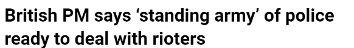
中国留学生该如何应对？
1
在骚乱地区的中国留学生，请特别留意英国政府网站（www.gov.uk）和中国驻英国大使馆官网（https://gb.china-embassy.gov.cn）的相关消息，在需要时及时寻求外交保护。
出国留学，人身安全是第一要事。如遇紧急情况，请及时报警求助并可与中国驻英国使领馆联系寻求协助：
英国警方报警电话999（非紧急情况拨打101）
外交部全球领事保护与服务应急热线（24小时）：+86-10-12308，+86-10-65612308
驻英国使馆：+44-7536174993
驻曼彻斯特总领馆：+44-161-2248986
驻爱丁堡总领馆：+44-131-3374449
驻贝尔法斯特总领馆：+44-7895306461
2
千万不要受鼓动参与抗议活动，平时上下学、外出争取与同学结伴而行，在遭遇紧急情况时，能够迅速获得帮助和支持。
3
保持低调与谨慎：尽量避免参与任何可能引发冲突或暴力的活动，避免去到发生暴乱区域。在公共场所，要保持低调和谨慎，不要随身携带过多现金或贵重物品，以防被盗或抢劫。
4
加强个人安全防范：学会基本的自我保护技能，如防身术、逃生技巧等。同时，要注意个人信息的保护，不要随意透露给陌生人或在不安全的网络环境中传输敏感信息。
5
关注时事动态：关注当地的时事动态和社会热点问题。有助于了解潜在的风险和威胁，并采取相应的防范措施。同时也可以通过社交媒体等渠道了解其他留学生的经验和建议。
最后，希望移民英国，或是在英国留学的家人都要加倍注意自身安全，平安健康。